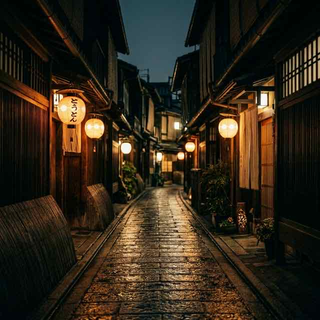

Concept
The final stop of tonight's journey
京都・祇園——この街には、夜ごとに無数の物語が生まれます。
華やかな会食のあと、友人との二次会のあと、
あるいは祇園の街をただ歩いたあとに。
「もう一杯だけ」「もう少しだけこの夜を」——
そんな想いに応える場所が、Route Zです。
円山ビル4F。エレベーターの扉が開けば、
祇園の喧騒から切り離された、静かな夜の終着点。
ここは今宵の旅路の"最後の一駅"。
だから、Route Z。

Values
良い酒を、いい価格で。初めての方もおひとりの方も、気負わず扉を開けてください。上質であることと、入りやすいことは矛盾しない——それがRoute Zの信念です。
カラオケ完備。しかし主役はあくまで酒と語らい。歌いたい時に歌い、語りたい時に語る。その絶妙な距離感を守り続けます。
ジャパニーズウイスキーからブランデー、シャンパン、ワイン、カクテルまで。飲み放題ではなく、一杯一杯を丁寧に。良いグラスで味わう余韻を大切にしています。
2軒目にも、3軒目にも、アフターにも。会食後のもう一杯にも、デートの最後にも。祇園で過ごす夜の最後に辿り着いてほしい場所です。
Scene
会食やお食事のあとに——もう一杯だけ、静かに飲みたい夜に。
2軒目・3軒目として——祇園の夜をもう少し味わいたい時に。
大切な人とのデートの締めくくりに——落ち着いた空間でゆったりと。
おひとりで静かに過ごしたい夜に——カウンターで一杯、自分だけの時間を。
京都観光の夜に——祇園・東山エリアで、雰囲気のよいBarを探している方に。
接待・会食後のアフターとして——上質で入りやすい隠れ家をお探しの方に。